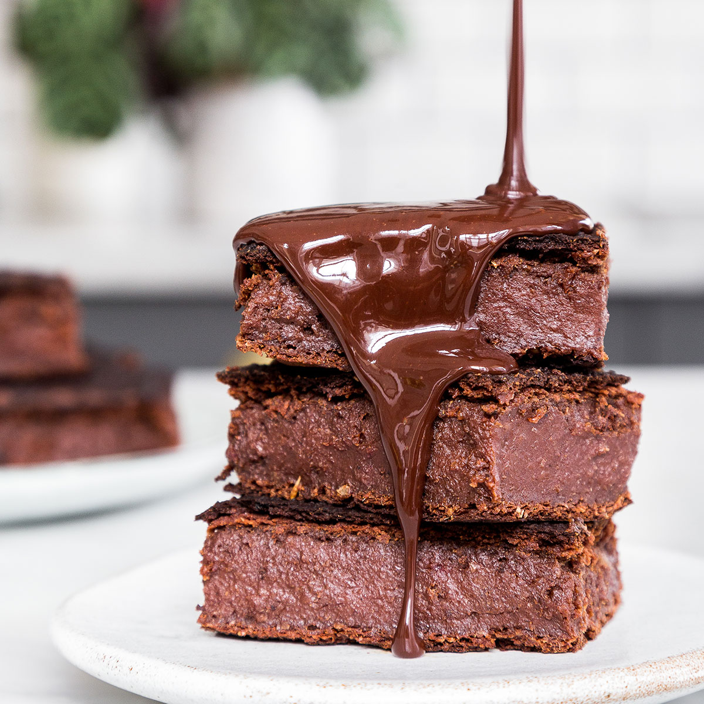

Brownies
This brownies will need
10 oz dark chocolate(300 g)
½ cup extra virgin olive oil (160 g)
4 eggs
7 oz sugar (200 g)
4.2 oz flour, sifted (120 g)
1.7 ounces walnuts, chopped (50 g)

How to make them
- Break the eggs into a large bowl and add the sugar. Whisk with an electric mixer at high speed, until
the mixture is thick, foamy and doubles it’s original volume.
- In the meantime melt the chocolate. To melt the chocolate it is best to use a bain-marie (or double
boiler), a piece of equipment used to heat the chocolate gently and gradually to fixed temperatures so
that it doesn’t burn. If you don’t have a Bain-marie, break the chocolate into small pieces and drop into
a heatproof bowl. Set the bowl over a small saucepan about a quarter full with hot water and place the
bowl on top so that it rests on the rim of the pan (the bowl should not to touch the water). Place the
pan, with the bowl on top, over low heat until the chocolate has melted, whilst stirring occasionally.
- Remove the pan from the stove and stir in the extra virgin olive oil, the egg-sugar mixture and the
chopped walnuts. Blend with a spatula with light circular movements from the bottom up. Sieve the flour
over the bowl a little bit at a time and blend, folding gently the mixture with circular movements from
the bottom up, until the ingredients combine. You don’t want to overwork the mixture.
- Line one round baking tin (approx. 18cm/7 inches) with parchment paper and tip in the mixture in an even
layer.
- Bake these olive oil brownies in a preheated oven to 160C 25-30 minutes, until they have formed a shiny
and dry slightly cracked layer but are still moist underneath.
Bon Appétit!